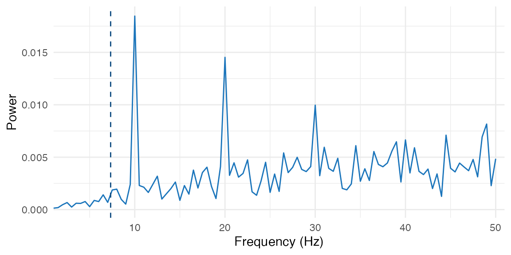
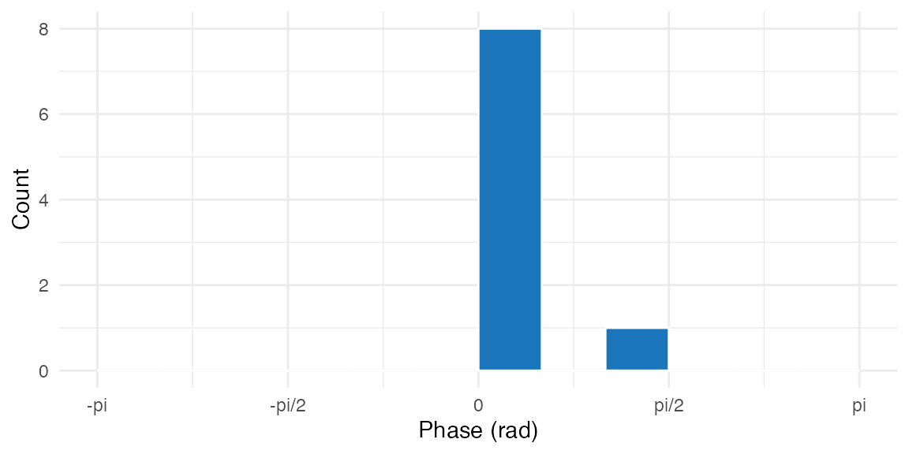
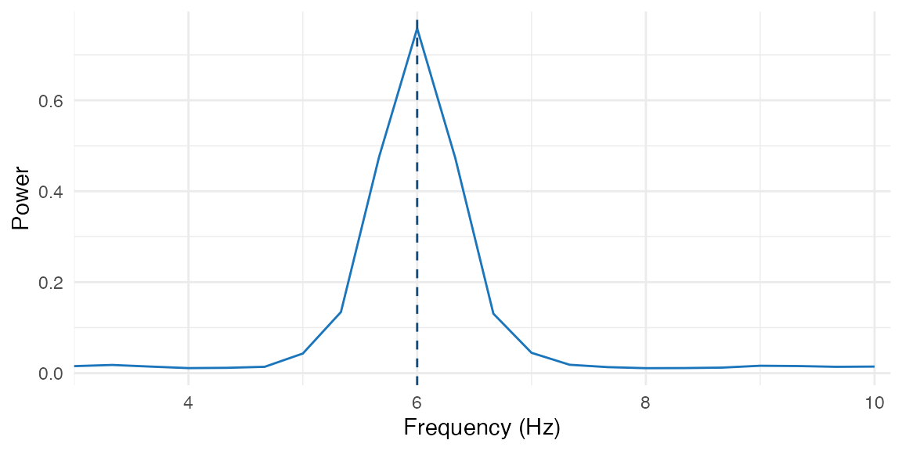
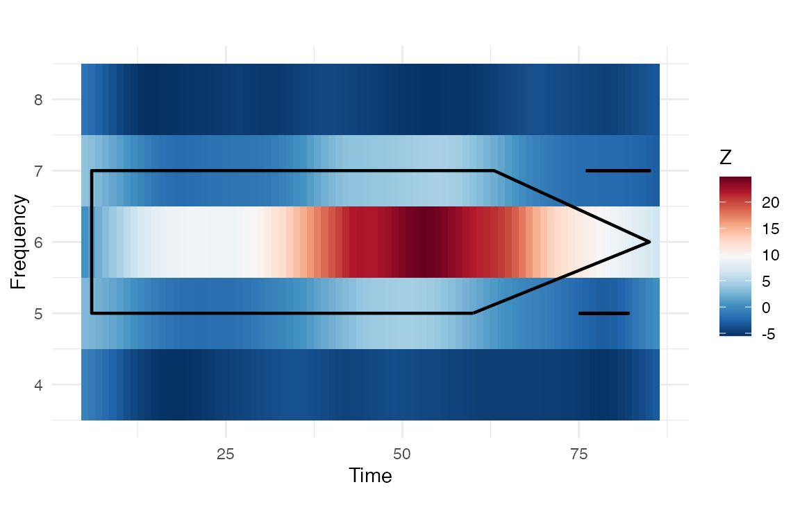

What does bosc do?
You have behavioral time series — reaction times, button presses, spike trains — and you want to know whether they contain rhythmic structure. Is there a dominant oscillation frequency? Is it statistically significant? At what phase of the oscillation do events occur?
bosc answers these questions with a small, focused API:
| Verb | Function | What it does |
|---|---|---|
| Score | oscillation_score_z() |
Quantify oscillation strength + significance |
| Aggregate | aggregate_by_bin() |
Turn trial data into regular subject-by-bin series |
| Group spectrum | group_spectrum_test() |
Test rhythmic power across subjects |
| Group TFR | group_tfr_test() |
Map where rhythmic power is concentrated |
| Group phase | group_phase_consistency() |
Test phase alignment across subjects |
| Filter | narrowband_hilbert() |
Extract phase and amplitude at a frequency |
| Phase | phase_at_events() |
Get instantaneous phase at event times |
| Cluster | detect_clusters() |
Find significant regions in time-frequency maps |
| Test | circ_rayleigh() |
Test for non-uniform phase distributions |
Your first oscillation score in 30 seconds
Create a signal with 10 Hz periodicity, compute the score, and test significance — all in one call:
set.seed(42)
fs <- 1000
sig <- numeric(2000)
spikes <- seq(50, 1950, by = 100) + round(rnorm(20, sd = 5))
spikes <- spikes[spikes > 0 & spikes <= 2000]
sig[spikes] <- 1
result <- oscillation_score_z(sig, fs = fs, flim = c(5, 20), nrep = 200)
stopifnot(
is.finite(result$oscore),
result$oscore > 0,
is.finite(result$fosc),
result$fosc >= 5,
result$fosc <= 20,
is.finite(result$z),
is.finite(result$pval),
result$pval >= 0,
result$pval <= 1
)
cat("Oscillation score:", round(result$oscore, 3), "\n")
#> Oscillation score: 4.908
cat("Peak frequency: ", round(result$fosc, 2), "Hz\n")
#> Peak frequency: 7.32 Hz
cat("Z-score: ", round(result$z, 2), "\n")
#> Z-score: 0.42
cat("P-value: ", format(result$pval, digits = 4), "\n")
#> P-value: 0.336
cat("Significant: ", result$significant, "\n")
#> Significant: FALSE
Power spectrum of the autocorrelogram. The dashed line marks the detected peak at ~10 Hz.
The oscillation score is 4.91 with a z-score of 0.4 — a clear rhythm in the 5-20 Hz target band.
Extracting phase at behavioral events
Given event times (in seconds), phase_at_events() builds
a continuous trace, filters at the target frequency, and returns the
instantaneous phase at each event:
events <- c(0.15, 0.25, 0.35, 0.45, 0.55, 0.65, 0.75, 0.85, 0.95)
phases <- phase_at_events(events, dt = 0.001, fosc = 10, bandwidth = 1)
stopifnot(
length(phases) == length(events),
all(is.finite(phases)),
all(phases >= -pi),
all(phases <= pi)
)
Phase distribution at event times.
Test whether the phases are non-uniformly distributed:
ray <- circ_rayleigh(phases)
r <- circ_r(phases)
stopifnot(is.finite(r), r >= 0, r <= 1, is.finite(ray$pval), ray$pval >= 0, ray$pval <= 1)
cat("Mean resultant length:", round(r, 3), "\n")
#> Mean resultant length: 0.908
cat("Rayleigh p-value: ", format(ray$pval, digits = 3), "\n")
#> Rayleigh p-value: 1.46e-05How do you move from trials to grouped oscillation maps?
When you have many subjects, the grouped workflow is:
- align each trial to a target bin grid
- regress out nuisance structure
- aggregate to one value per subject and bin
- compute grouped spectral, time-frequency, or phase summaries
The example below uses a cue-locked behavioral trace with small
timing jitter and a slow linear drift. The true rhythmic component is
centered near 6 Hz. This dense-sampling trial-to-spectrum pattern is
also the kind of workflow used in recent empirical applications of
cue-locked memory analysis. For a reproducible example based on the
shared Biba et al. (2026) dataset, see
inst/examples/biba_confirmatory_fft.R.
aligned_trials <- align_time_bins(
grouped_trials,
time = "time_ms",
bins = nominal_bins,
tolerance = 18,
out = "time_bin"
)
residual_trials <- residualize_trials(
aligned_trials,
response = "score",
terms = "trial_index",
by = "subject",
out = "score_resid"
)
grouped_bins <- aggregate_by_bin(
residual_trials,
value = "score_resid",
bin = "time_bin",
by = "subject",
bins = nominal_bins
)
group_mat <- unname(as.matrix(stats::xtabs(score_resid ~ subject + time_bin, data = grouped_bins)))
stopifnot(
nrow(group_mat) == n_subjects,
ncol(group_mat) == length(nominal_bins),
all(is.finite(group_mat))
)
dim(group_mat)
#> [1] 8 90What is the dominant grouped rhythm?
spec <- group_spectrum_test(
group_mat,
fs = fs_group,
flim = c(3, 10),
null = "shuffle_labels",
nrep = 100,
taper = "hann",
seed = 11
)
peak_i <- which.max(spec$observed$power)
stopifnot(
is.finite(spec$observed$peak),
abs(spec$observed$peak - 6) < 1,
is.finite(spec$stats$z[peak_i]),
spec$stats$p_adj[peak_i] < 0.1
)
cat("Grouped peak frequency:", round(spec$observed$peak, 2), "Hz\n")
#> Grouped peak frequency: 6 Hz
cat("Peak adjusted p-value:", format(spec$stats$p_adj[peak_i], digits = 3), "\n")
#> Peak adjusted p-value: 0
cat("Peak z-score: ", round(spec$stats$z[peak_i], 2), "\n")
#> Peak z-score: 32.02
Grouped spectrum after trial alignment, nuisance regression, and bin aggregation.
Where is the effect in time-frequency space?
tfr <- group_tfr_test(
group_mat,
fs = fs_group,
freqs = 4:8,
bandwidth = 0.75,
null = "shuffle_labels",
nrep = 40,
reflect = TRUE,
edge = 4,
seed = 11
)
peak_cell <- which(tfr$observed$map == max(tfr$observed$map), arr.ind = TRUE)[1, ]
peak_freq <- tfr$observed$freq[peak_cell[1]]
peak_time <- tfr$observed$time[peak_cell[2]]
stopifnot(
is.finite(tfr$stats$z[peak_cell[1], peak_cell[2]]),
peak_freq >= 5,
peak_freq <= 7,
peak_time >= min(tfr$observed$time),
peak_time <= max(tfr$observed$time)
)
cat("Max TFR frequency:", peak_freq, "Hz\n")
#> Max TFR frequency: 6 Hz
cat("Max TFR time: ", round(peak_time), "ms\n")
#> Max TFR time: 50 ms
cat("Max TFR z-score: ", round(tfr$stats$z[peak_cell[1], peak_cell[2]], 2), "\n")
#> Max TFR z-score: 23.69
cat("Detected clusters:", length(tfr$stats$clusters), "\n")
#> Detected clusters: 4
Grouped time-frequency z-map. Cluster outlines mark suprathreshold regions.
Are phases aligned across subjects?
phase_grp <- group_phase_consistency(
group_mat,
fs = fs_group,
freq = 6,
bandwidth = 0.75,
reflect = TRUE,
edge = 4
)
stopifnot(
all(is.finite(phase_grp$stats$r)),
all(phase_grp$stats$r >= 0),
all(phase_grp$stats$r <= 1),
mean(phase_grp$stats$r) > 0.6
)
cat("Mean phase concentration:", round(mean(phase_grp$stats$r), 3), "\n")
#> Mean phase concentration: 1
cat("Peak phase concentration:", round(max(phase_grp$stats$r), 3), "\n")
#> Peak phase concentration: 1Where to go next
You’ve just seen the core three-step pipeline: score
(oscillation_score_z()), extract phase
(phase_at_events()), test
(circ_rayleigh()), and the grouped workflow from trial
tables to spectral maps. When you want to go deeper, the other vignettes
unpack each layer in more detail.
| I want to… | Read this |
|---|---|
| Understand oscillation scores in depth | vignette("oscillation-score") |
| Analyze phase consistency and clusters | vignette("ppc-clustering") |
| Run batch analyses across subjects | vignette("workflow-wrappers") |
References
bosc is an R port of the behavioral-oscillations MATLAB toolbox. If you use this package in published work, please cite the original paper:
Ter Wal, M., Linde-Domingo, J., Lifanov, J., Roux, F., Kolibius, L.D., Gollwitzer, S., Lang, J., Hamer, H., Rollings, D., Sawlani, V., Chelvarajah, R., Staresina, B., Hanslmayr, S., & Wimber, M. (2021). Theta rhythmicity governs the timing of behavioural and hippocampal responses in humans specifically during memory-dependent tasks. Nature Communications, 12, 7048. https://doi.org/10.1038/s41467-021-27323-3
Related dense-sampling applications include:
Biba, T. M., Decker, A., Herrmann, B., Fukuda, K., Katz, C. N., Valiante, T. A., & Duncan, K. (2026). Episodic memory encoding fluctuates at a theta rhythm of 3-10 Hz. Nature Human Behaviour. https://doi.org/10.1038/s41562-026-02416-5